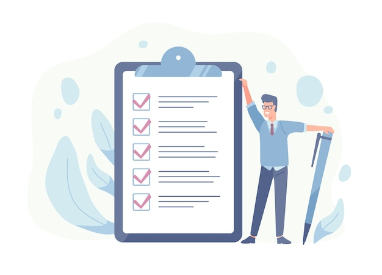

ABOUT ME

ZION ESENYI
I am a microbiologist in My final year at the University of ilorin, currently working for Ministry of Health,Started learning programming some months ago my goal is to become a Frontend Developer,learnt HTML,CSS,Learning javascript now.I also do task managing and virtual assistance.I am also good at football,enjoy playing it for fun.I love horror movies,play video games mostly fifa,also love watching animes.
PORTFOLIO


SERVICES
Microbiology
I am a microbiologist, I have practiced this profession now for ten months as an intern at the Ministry of Health, Lagos state government.Where I specifically work in the medical laboratory,carrying out various test like PCV,MP,WIDAL ,HBV,HIV etc.

Task Managing
I handle various tasks which usually involves planning,testing,tracking and reporting.I also get involved in making accurate database or updating records in a specific data records.It also involves monitoring project task from the beginning to the end, I have handled task managing for two personel and a private company.

Website
Design
I built a food website using standardised code, User experience design and Search engine optimization, The website was simply about balance diet and how to combine food for proper nutrition.